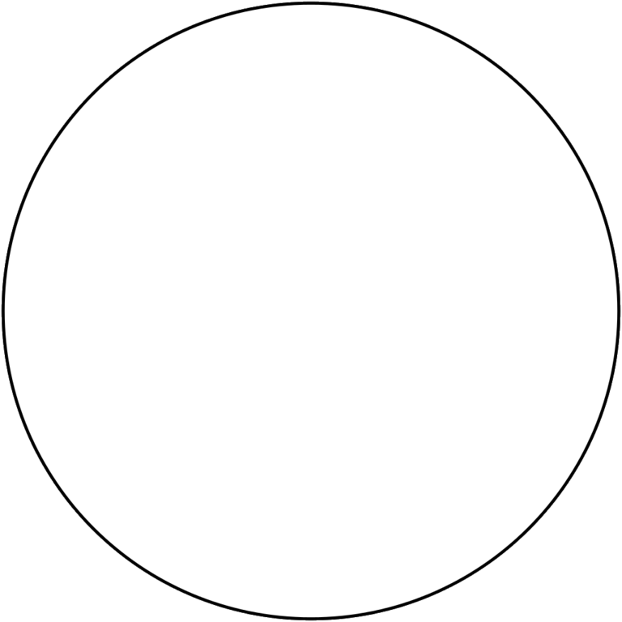

GEOMETRY is one of the oldest subjects that are still in existence today. It is the study of mathematics that is concerned with the size, shapes, and figures of objects, as well as the qualities of space. As part of their geometry instruction, pupils learn all about the fundamental shapes, their properties, various formulas, areas and volumes, and many methods of sketching different shapes. However, through time, it has evolved into something much more significant, and it has become an important part of our everyday lives.

Refer to this video for better understanding of geometric shapes.
Important Geometric Shapes
-
Square: Area = (Side)2
-
Triangle: Area = (1/2) x Base x Height
-
Rectangle: Area = Length x Breadth
-
Circle: Area = π x (Radius)2



Applications of Geometry in Real Life
-
Nature
-
Technology
-
Architecture
-
Sports
Using Programming to Calculate Area
# Three sides of the triangle is a, b and c:
a = float(input('Enter first side: '))
b = float(input('Enter second side: '))
c = float(input('Enter third side: '))
# calculate the semi-perimeter
s = (a + b + c) / 2
# calculate the area
area = (s*(s-a)*(s-b)*(s-c)) ** 0.5
print('The area of the triangle is %0.2f' %area)